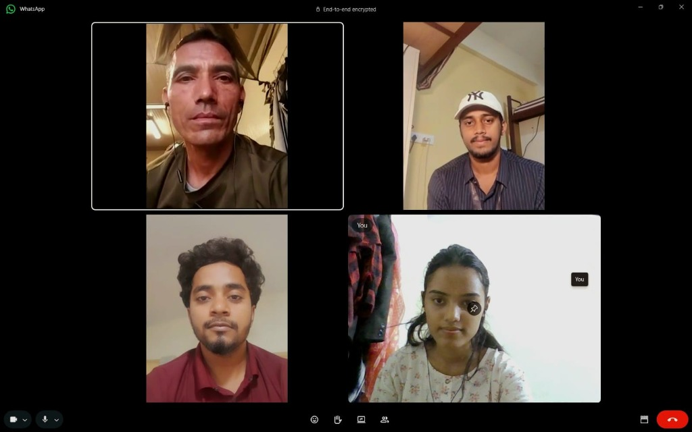

TRINETRA
Hyperlocal Risk Prediction & Early Warning System
Trinetra combines multi-source environmental data, XGBoost-based AI/ML prediction and physics-informed validation to deliver continuous, explainable and actionable flash-flood warnings at the village/ward level.
TRINETRA AI Risk Engine
Live Ward-Level Inference Telemetry
The warning gap is local.
Flash floods strike steep micro-basins within 30 to 90 minutes of cloudburst onset. While national meteorological agencies provide broad regional synoptics, the last-mile operational warning gap at the village and ward level remains unsolved.
Lack of Localization
Regional meteorological alerts span hundreds of square kilometers. They fail to resolve ward- and village-scale micro-topography where rapid runoff creates sudden flash torrents.
Fragmented Signals
Rainfall gauges, river stage sensors, upstream catchment runoff, and satellite precipitation feeds exist in disconnected institutional silos without real-time synchronization.
Need for Interpretation
Emergency coordinators and local panchayat officials receive raw metrics (mm/hr, cumecs) rather than actionable tactical intelligence: who needs to evacuate and precisely by when.
Reliability & False Alarms
Conventional static thresholds trigger either delayed alarms or chronic false alerts, creating warning fatigue among communities that leads people to disregard warnings.
SOLUTION – TRINETRA
TRINETRA closes the warning gap by unifying real-time IoT river telemetry, high-resolution satellite precipitation, machine learning, and hydrodynamic physics into an automated early-warning loop.
Hyper-Local Risk Prediction
Calculates risk indices tailored down to specific municipal wards and rural village drainage corridors rather than district-wide averages.
Multi-Source Data Integration
Simultaneously ingests ground ultrasonic sensors, rain gauges, satellite precipitation grids, Doppler radar sweeps, and digital terrain elevation.
AI/ML Risk Assessment (XGBoost)
Trained on historical flash flood dynamics using XGBoost for rapid, ultra-accurate non-linear classification with sub-second inference.
Physics-Informed Validation
Cross-validates predictions with hydrological mass balance and Manning hydraulic roughness equations to eliminate hallucinations and false triggers.
Continuous Monitoring + Explainable Alerts
24/7 sliding window monitoring that generates explainable, transparent warnings with SHAP feature breakdown so responders understand the triggers.
Automated Multi-Channel Dispatch (CAP v1.2)
Autonomous sirens, cellular geo-targeted SMS, and direct API push to DDMA and NDRF control hubs without manual human latency or delays.
The Operational End-to-End Pipeline
Continuous 6-stage autonomous flash-flood mitigation lifecycle
How It Works
From mountain-top sensor nodes to community loudspeakers, TRINETRA automates every step of localized risk calculation and dissemination.
Edge Ingestion & Sensor Telemetry
Low-power ESP32 nodes placed along catchment rivers transmit water stage levels (ultrasonic) and rainfall rates via lightweight MQTT packets every 180 seconds.
Catchment Feature Synthesis
FastAPI backend combines sensor time-series with satellite radar precipitation grids, digital elevation terrain slopes, and 72-hour antecedent soil moisture.
XGBoost Risk Classification & Physics Gating
High-speed gradient boosting calculates inundation probability. Output is instantly tested against hydrodynamic Manning roughness constraints to ensure physical plausibility.
Autonomous Multi-Tier Alert Broadcast
If risk exceeds ward threshold, CAP-standard emergency broadcasts trigger localized sirens, automated SMS to registered residents, and tactical notices to NDRF/DDMA control centers.
Ward 14 — Alaknanda Confluence Corridor
Geofence: Micro-Basin #04B • Confidence: 94% Probability
IMMEDIATE EVACUATION: Direct residents of low-lying wards to designated shelter Zone B. Sound ward sirens #3 and #4 immediately.
Technology Stack
Engineered for high reliability, fault tolerance, and sub-second inference across edge sensors, microservices, and emergency dashboards.
XGBoost
Gradient-boosted decision trees optimized for tabular environmental telemetry with SHAP explainability.
Python + FastAPI
Asynchronous, high-throughput microservices architecture delivering real-time REST and WebSocket telemetry streams.
Streamlit
Interactive real-time Emergency Operations Center (EOC) console for risk monitoring, model explainability, and alerts.
PostgreSQL
Relational time-series store augmented with PostGIS for spatial polygons, catchment boundaries, and historical logs.
ESP32 + Sensors
Ruggedized microcontroller nodes with ultrasonic water-depth transducers and tipping-bucket rain gauges.
MQTT Protocol
Lightweight publish/subscribe messaging engineered for low-bandwidth cellular and satellite uplinks in severe storms.
Leaflet + OSM
Hardware-accelerated geospatial overlays for ward contours, hazard zones, elevation profiles, and sensor positions.
Pandas + NumPy
High-performance vectorized rolling-window calculations, noise filtering, outlier detection, and data wrangling.
Environmental APIs
Multi-source atmospheric feeds including IMD radar, NASA GPM satellite precipitation, and Open-Meteo models.
Docker + GitHub
Containerized microservices orchestration, automated unit test validation, and CI/CD deployment pipelines.
Real voices. Real-world context.
To build a solution that works under extreme pressure, Team EntangleX conducted direct discussions with frontline rescue operators and emergency response personnel who handle mountain torrents and monsoon inundations on the ground.

Critical Operator Insights
"When a cloudburst hits upstream, we don't have 3 hours—we have 40 minutes. If the warning only says 'Heavy Rainfall in District', nobody moves. But if it says 'Ward 12 riverbank will surge in 35 minutes', families pack up and evacuate immediately."
The 45-Minute "Golden Evacuation Window"
Frontline teams confirmed that an automated lead time of 30-90 minutes reduces rescue deployment casualties by over 80% compared to reactionary post-inundation calls.
Zero-Jargon, Direct Action Playbooks
Civilian warnings must replace cumecs and decibars with clear, unambiguous instructions: exact high-ground shelter routes and specific evacuation deadlines.
Resilience Against Power Grid Failure
Severe storms frequently knock out cell towers. TRINETRA utilizes local sirens and solar-backed MQTT mesh to ensure alerts ring out even during utility blackouts.
Measurable Disaster Impact
By shifting from delayed reactive response to continuous proactive intelligence, TRINETRA protects lives, livelihoods, and civic infrastructure.
Earlier Identification
Extends critical response lead times from 0–10 minutes of reactive panic to 30–90 minutes of calculated, orderly evacuation before water levels crest.
More Precise Warnings
Pinpoints vulnerable micro-wards, individual riverside hamlets, and specific bridge crossings instead of shutting down entire administrative districts.
Better Decisions
Equips District Disaster Management Authorities (DDMA) with explainable AI confidence scores and clear tactical playbooks to allocate rescue resources wisely.
Community Preparedness
Builds resilient grassroots trust through local vernacular alerts, automated sirens, and panic-free evacuation guidance that villagers understand and respect.
Team EntangleX
Smart India Hackathon 2026 • Dedicated engineers and researchers uniting AI, hardware engineering, and disaster management.
Anusha Karki
Team Leader, Researcher & Frontend Developer
Rathinam Technical Campus
Om Prakash Mandal
Backend Developer & Pitcher
Rathinam Technical Campus
Ashish Kumar Shah Gupta
AI/ML Developer & Data Analyst
Rathinam Technical Campus
Laxman Chaudhary
Testing & Technical Support
Rathinam Technical Campus
Piruthvi Saran A
Hardware & IoT Integration
Rathinam Technical Campus
Mukesh M
Hardware & Sensor Systems
Rathinam Technical Campus
Project Mentors
Distinguished faculty leadership providing technical direction, competitive hackathon strategy, and domain expertise.
Er. Gajendran Parthasarathi
Head – School of Design and Innovation
Rathinam Technical Campus
Mr. K. Muthusamy
Head – Technical Competitions and Hackathons
Rathinam Technical Campus